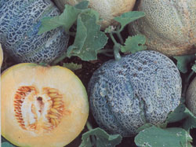
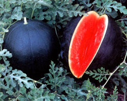
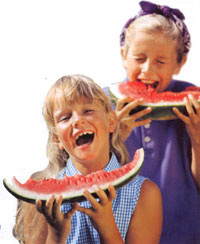
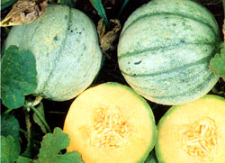
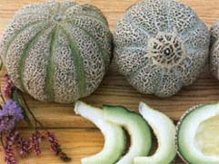
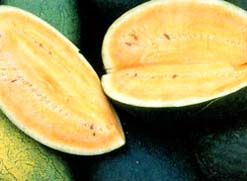
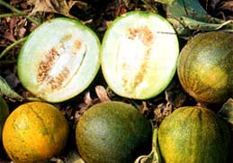
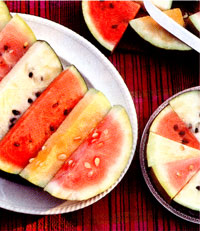
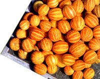
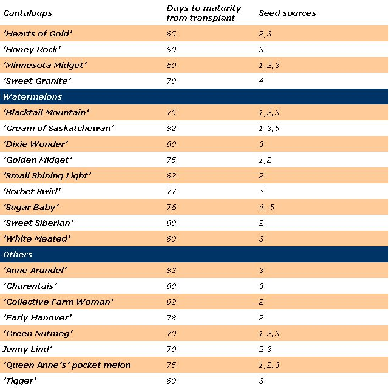

Yes, melons need heat to develop their sugars. And yes, they need sun-drenched days to produce the rampant vines that manufacture carbohydrates that sweeten the fruits. But they don't need endless days of such weather. Plenty of delicious melons can he grown in summer-starved places from Montana to Maine and into Canada by using varieties that mature in 85 days or less, heating up the soil fast and starting seeds indoors. Even in areas with longer growing seasons, these early birds provide a sweet prelude to the later-season favorites.
Numerous heirloom melons - some brought from Russia, and other varieties developed by cold-climate breeders - mature within the 85-day window and are available early. Consider the spicy sweetness of 'Green Nutmeg,' which has been around more than 150 years. It's ripe in 80 days. Or think about planting `Golden Midget,' a pink watermelon with a rind that turns golden yellow when fully mature at 75 days. Dr. Elwyn Mender of the University of New Hampshire created this open-pollinated, 6-inch melon in 1959. Another extra-early (70 days) watermelon, 'Blacktail Mountain,' sets the flavor standard for all watermelons, according to Amy Goldman, author of Melons for the Passionate Gardener. "The flesh color is scarlet, and the taste is juicy, crunchy and sweet. It's everything you ever want from a watermelon," says Goldman, who has grown more than 200 melon varieties.
Smaller fruits and early flowering are traits that set apart melons that mature early in the growing season. Aaron Whaley of Seed Savers Exchange, a nonprofit organization that preserves heirloom varieties at Heritage Farm in Decorah, Iowa, says, "If a melon grows in our three-month season here, it will grow anywhere." Many of the best-tasting and most-attractive varieties grown at Heritage Farm have small nuts and ripen fast. 'Jenny Lind,' a green-fleshed cantaloupe that weighs about a pound, is ready to pick in 70 days. `Cream of Saskatchewan,' a super-sweet white-fleshed heirloom watermelon, weighs four to 10 pounds and ripens in about 80 days. So does `Sweet Siberian' watermelon, which Glenn Drowns of Sand Hill Preservation Center grows in his Calamus, Iowa garden. The yellow-fleshed melon weighs in at about eight pounds.
Drowns developed Amy Goldman's favorite, `Blacktail Mountain,' when he lived in Careywood, Idaho. The growing season there is only 75 days long; the six to 10-pound melons ripen in that short period of time. Compact foliage is another characteristic shared by short season varieties. Their vines and the distance between leaves (nodes) are shorter than larger, long-season melons. "I can go through a field of different melon varieties," Drowns says, "and tell immediately which ones are fast producers. The distance between nodes on the vines will be shorter. They flower earlier, too."
Melons are native to Africa, and the trick to getting the best-quality fruit in cooler climates is to duplicate the continent's hot sun and sandy soil as best you can. Situate the melon garden in a southfacing, full-sun area. Because seeds and transplants do nothing until the soil has warmed to at least 60 degrees, use clear or black plastic to heat up the ground. Jeremiath Gettle, owner of Baker Creek Seed Co. in Mansfield, Missouri, which offers nearly 90 heirloom and rare melon varieties, goes even further with plastic. He uses a clear plastic film over seeds or young plants to generate more heat. "Late melons can be ripened under plastic, too," Gettle says.
At Heritage Farm, Whaley says they use black landscape cloth instead of black plastic. "The cloth allows the soil to breathe and water to pass through, something plastic does not do," he says. In her Hudson River Valley garden in New York, Goldman uses black plastic on the ground and spun polyester row covers over transplants to give them a fast start. The covers also are excellent for controlling cucumber beetles and vine borers, which are the worst melon pests. Row covers must be removed when plants start to bloom so that pollinating insects can reach the flowers.
Light, fluffy soils warm faster than do clay ones. Plus, melons love loose, well-drained dirt, Goldman says. She suggests amending the ground with compost or leaf mold, or sowing a cover crop such as winter rye or hairy vetch the previous fall. Turn it over in the spring a month before you plant.
"Here in New York, I couldn't get the magnificent melon harvest that I do without a jump start," Goldman says. She starts all melon seeds four to six weeks ahead in her potting shed so she can control germination with the right amount of warmth and moisture. After seeds germinate, they get 16 hours of light daily to build sturdy transplants. At Heritage Farm in Iowa, they start seeds indoors, too, and set out 2- to 3-week-old transplants. Gettle, on the other hand, says he thinks direct seeding is better. "Melons don't do the best when transplanted for us. They don't harden off well, and the vines tend to get sunburned and stunted," he explains. "Any transplant loses 10 days in growth, at least, if the roots are disturbed." Gettle suggests if seeds are started indoors to use large, deep pots so that the roots will remain undamaged when setting them into the ground. "Dig a deep hole, too," he adds.
Gauging when melons are at the peak of flavor can be tricky, especially with watermelons. Watch for the following signs:
Watermelons. Watch the tendril closest to the melon stem. When it turns brown and dries up, the melon usually is ripe. With some watermelon varieties, however, the tendril dries and drops off more than a week before the melon is fully ripe, so use other methods, too. Monitor the melon's weight. Lift it daily. As it approaches maturity, weight increases. The surest sign of ripeness for most watermelons is the color of the bottom spot where the melon sits on the ground. As the watermelon matures, the spot turns from almost white to a rich yellow. Also, all watermelons lose the powdery or slick appearance on their top and take on a dull look when fully ripe.
Cantaloupes. Look for a crack on the stem where it meets the fruit. Give a gentle tug, and if the melon separates easily, it's probably ripe. If not, let it sit at room temperature a day or two. Gauge its ripeness then by aroma and softness of the blossom end of the melon.
Others (honeydew, Charentals, Crenshaw, winter). Watch for skin color changes. Some varieties go from dull gray to bright yellow when fully ripe. Aroma is a good indicator, too, along with softness at the blossom end. Look for full slip (crack on the stem that goes all the way around). Winter melons, which have hard rinds and which can be stored, should be left on the vine as long as possible. Check periodically for fine cracks in their rinds which indicate ripeness.
Apple-sized 'Queen Anne's' pocket melons are the aromatic giants of the melon world, redolent with a perfume described best as a mix of ripe cantaloupe, pineapple and a hint of jasmine. This heirloom also is known by the names 'Plum Granny,' 'Dudaim,' 'Perfume' and 'Pomegranate.' It has been around for hundreds of years and was especially favored by the Victorians. Ladies of the era carried them in their pockets and purses as perfume. Although they are attractive in their velvety orange rinds striped in carmine and gold, these melons sadly are not gourmet fare. In fact, the creamy white flesh is barely edible; it's tasteless and slimy. 'Tigger' is very similar to 'Queen Anne's' in appearance, but it's three times bigger and even more aromatic. Plus, it's tasty. The Baker Creek Seed Co. catalog describes 'Tigger' as vibrant yellow with fire-red zigzag stripes. Its white flesh is sweet with a citrus aftertaste. Each melon is about one pound, perfect for one or two servings. Plants are prolific, too, and melons are ripe in about 80 days.
|
 DAVID CAVAGNARO 'Minnesota Midget' boasts sugary flesh that's edible right to the rind. |
 KENT WHEALY 'Black Tail Mountain' sets the flavor standard for watermelons. |
 KENT WHEALY Yummmmmm! |
|
 DAVID CAVAGNARO 'Honey Girl,' a Charentais type, is super sweet and very fragrant. |
 KENT WHEALY Introduced in 1846, 'Jenny Lind' has sweet, juicy, lime-green flesh. |
 DAVID CAVAGNARO 'Sweet Siberian' watermelon is aptly named for the taste of its gorgeous orange-yellow flesh. |
|
 DAVID CAVAGNARO 'Collective Farm Woman' has sweet, crisp flesh. From the Ukraine, it is said to grow well even in Moscow. |
 DAVID CAVAGNARO Colorful heirloom watermelons make a beautiful and delicious treat. |
 KENT WHEALY 'Queen Anne's' pocket melon gives off an exotic perfume, but it's barely edible. |
|
 MOTHER EARTH NEWS EDITORS Maturity rates for transplanted cantaloupes, watermelons and other melons. |
|
|